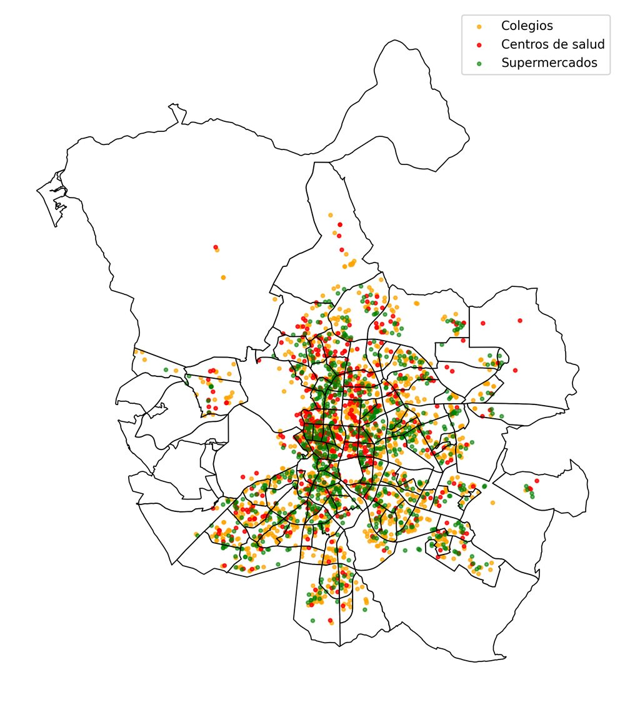
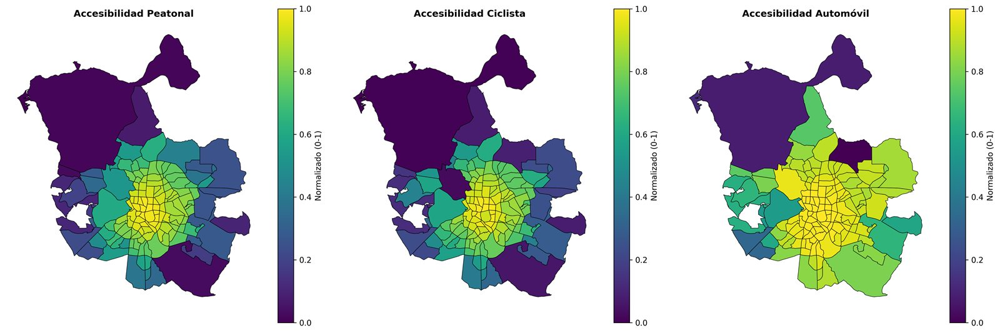
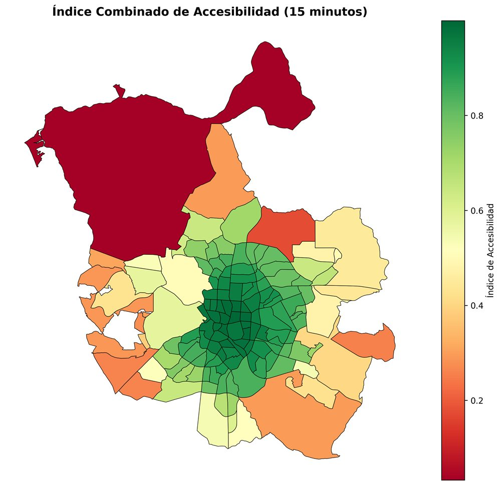

Todos los proyectos
Madrid, ¿ciudad de 15 minutos?
¿Cuántos colegios, centros de salud y supermercados se alcanzan en 15 minutos desde cada barrio de Madrid? Lo calculamos a pie, en bici y en coche sobre las redes viarias reales de OpenStreetMap.
- Destinos
- Colegios · centros de salud · supermercados
- Modos
- A pie · bicicleta · coche
- Unidad
- Barrios de Madrid
- Datos
- OpenStreetMap · enero de 2026
Método
- Redes viariasOSMnx · un grafo por modo
- Tiempo por tramolongitud ÷ velocidad
- DijkstraNetworkX · desde el centroide de cada barrio
- Isócrona de 15 minpolígono alcanzable
- Destinos dentrounión espacial
- Índice combinadomin–max por modo y media
Para cada modo de transporte descargamos un grafo independiente: los nodos son cruces y las aristas, tramos de calle. Asignamos a cada tramo un tiempo de recorrido y, con Dijkstra, calculamos qué nodos se alcanzan en 15 minutos. Con ellos construimos la isócrona de cada barrio y contamos cuántos destinos caen dentro.
Como los valores no son comparables entre modos, los normalizamos entre 0 y 1 y definimos un índice combinado como la media de los tres modos.

Resultados

- Hay un gradiente centro–periferia claro: los barrios centrales concentran la accesibilidad.
- La bicicleta mejora mucho respecto a caminar, y el coche alcanza valores altos en muchos más barrios.
- Algunos barrios son accesibles con cualquier modo; otros dependen totalmente del coche.
Limitaciones
- Velocidad estimada fija por modo: no se modelan el tráfico ni la pendiente.
- El centroide del barrio representa a toda su población.
- Los datos de OpenStreetMap pueden estar incompletos en algunas zonas.
Python · OSMnx · NetworkX · OpenStreetMap
